Rrafshi i Dukagjinit
Position: Western Kosovo
Population: One of the most populated regions
The Dukagjin Plain is known for its fertile land and cities such as Peja, Gjakova, and Deçan.

 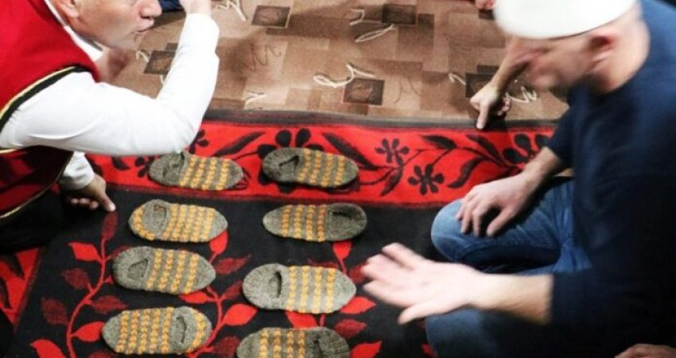
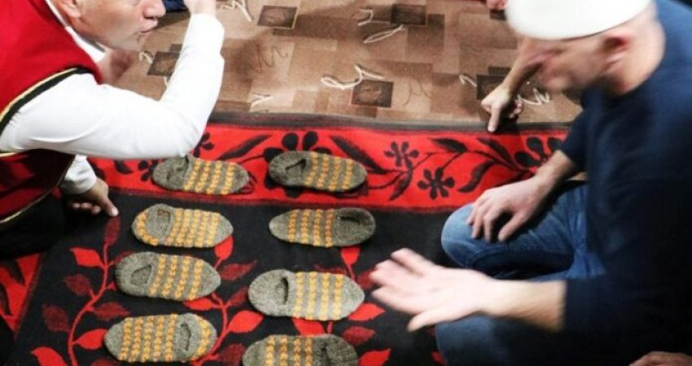
Kosovo is divided into several historical and geographical regions, each with its own identity, traditions, landscapes, and cultural heritage.
Position: Western Kosovo
Population: One of the most populated regions
The Dukagjin Plain is known for its fertile land and cities such as Peja, Gjakova, and Deçan.
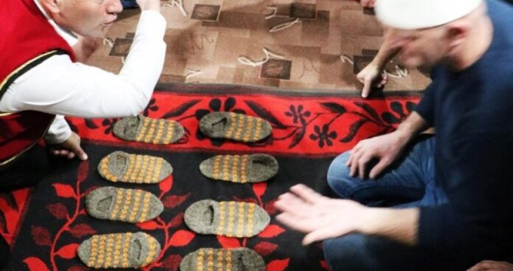
Position: Central Kosovo
Population: Highly urbanized
The economic heart of the country, including the capital city, Prishtina.


Position: Eastern Kosovo
Population: Medium density
Anamorava is known for agriculture, open plains, and strong family traditions.
The region preserves folklore, traditional music, and rural architecture.
 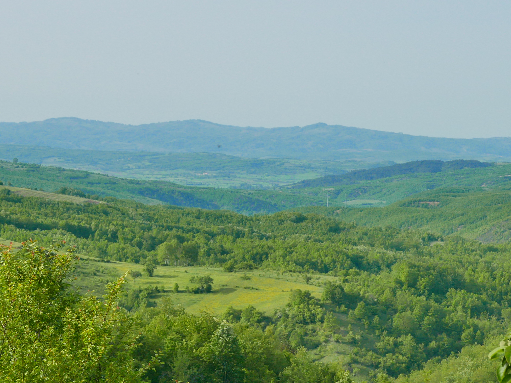
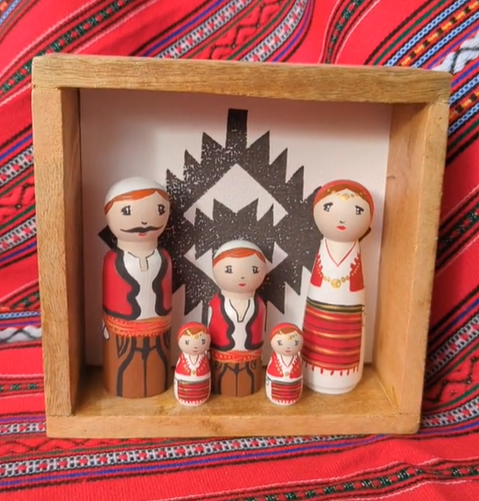
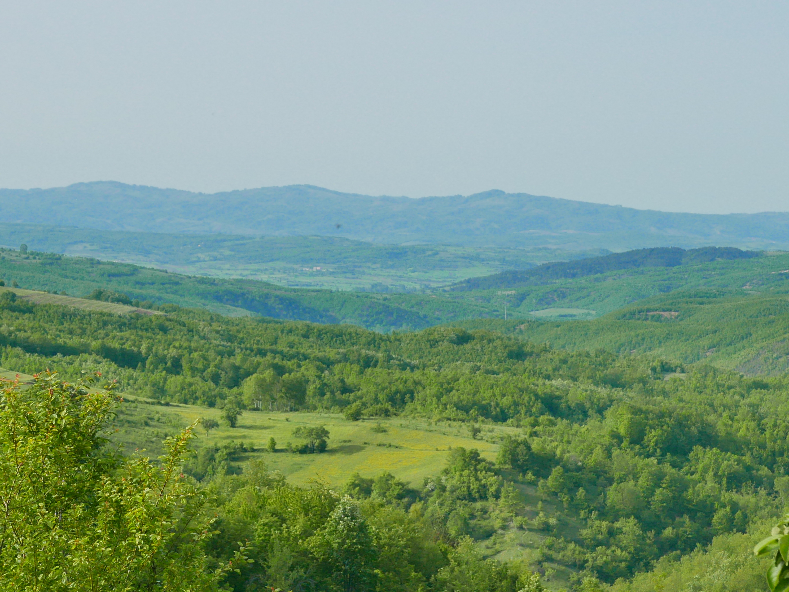
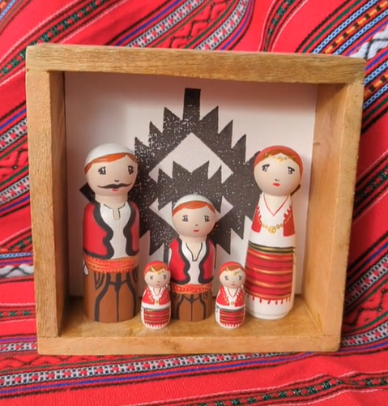
Position: Northern mountainous area
Population: Sparsely populated
A mountainous region known for untouched nature, traditions, and strong community values.
Shala e Bajgorës is ideal for eco-tourism, hiking, and cultural exploration.
 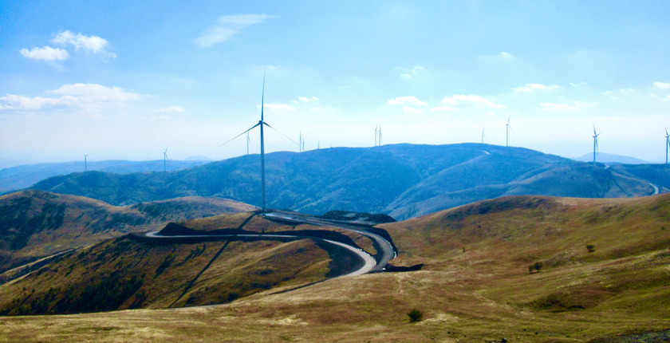
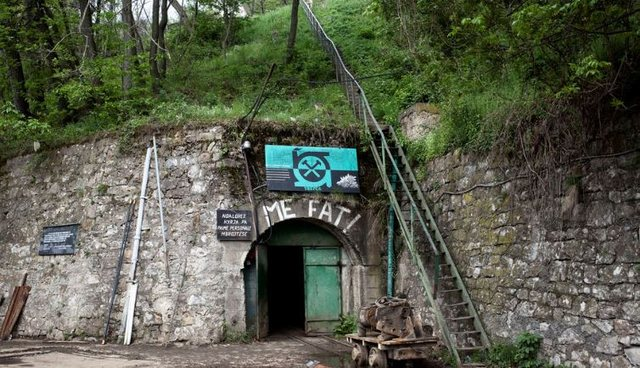
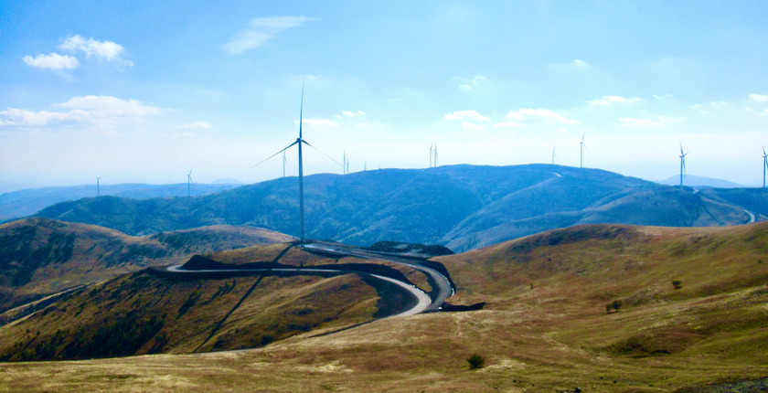
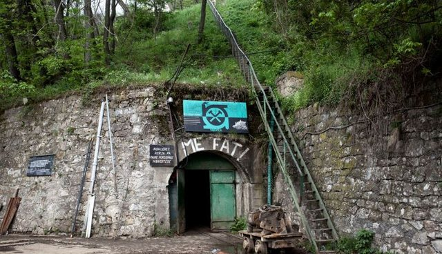
Position: Central-west Kosovo
Population: Traditional rural communities
Drenica is known for its strong historical role and resistance, as well as its cultural and national importance.
The region contains memorial sites, villages, and strong cultural identity.
 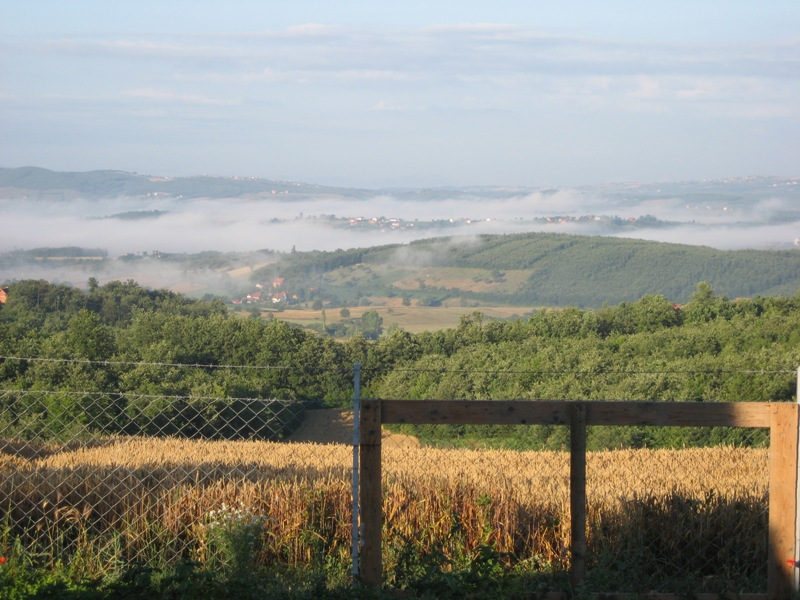
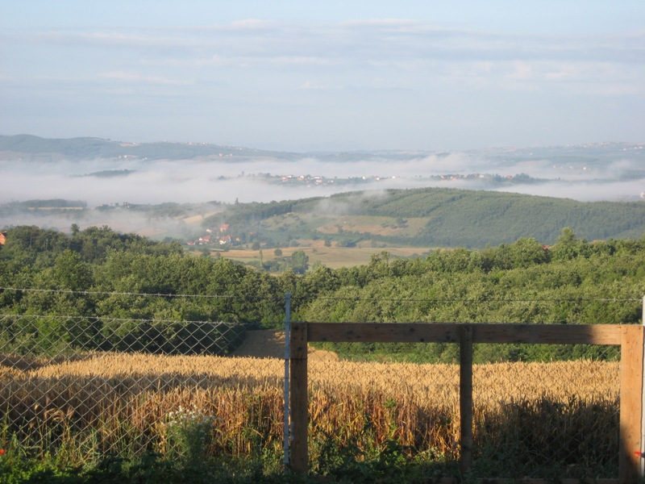

Position: North-eastern Kosovo
Population: Mixed urban and rural
Llapi is famous for agriculture, traditions, and historic towns such as Podujeva.
The region combines natural beauty with cultural heritage and folklore.